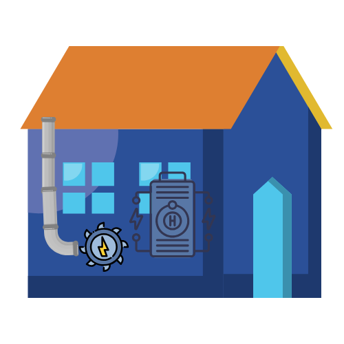

Abstracto
La generación de energía eléctrica a partir de fuentes no renovables, como el carbón, el petróleo y el gas natural, es una de las principales causas de las emisiones de gases de efecto invernadero (GEI) a nivel mundial. Es por ello que traemos la propuesta de la implementación de una energía renovable que ayude al medio ambiente
Introcución
Con el paso de los años y el significante desarrollo tecnológico que se encuentra en nuestro entorno, la demanda de consumo de electricidad se ve aumentado, tanto a nivel industrial como personal. Dando a lugar a que las plantas generadoras tengan que abastecer esta demanda, produciendo aún más gases de efecto invernadero y liberando contaminantes que dañan a nuestros ecosistemas y a nuestra salud personal
El uso de energías renovables consiste en hacer uso de recursos naturales como el aire, agua o viento, entre otros, como fuente principal para producir energía. Esta es la mejor opción para producir energía ya que no consumen los recursos como tal, si no que solo aprovechan su ciclo natural para aprovechar esa energía y poder transformarla a energía eléctrica. Sin emisiones de GEI o metales pesados que lleguen a dañar a nuestro medio ambiente o salud personal
Un tipo de energía renovable son las centrales hidroeléctricas, las cuales funcionan a partir del uso de las corrientes de agua, las cuales pasan por turbinas que activan un generador que posteriormente pasan por transformador que convierte esa energía mecánica a eléctrica de corriente alterna; una central mediana que se encuentre en una presa por ejemplo produce de entre 15 a 100 MV. Pero ahora hay una nueva alternativa que funciona a partir de este mismo sistema, pero a un nivel escalar más pequeño, pero igual de eficiente. Son las micro y mini centrales hidroeléctricas, las cuales pueden usarse en pequeños ríos llegando a abastecer la demanda eléctrica de una casa o incluso sistemas más complejos
problematica
Como ya mencionamos año con año el desarrollo social, económico, de infraestructura, industria, comercial, esta creciendo más y más; las pequeñas poblaciones crecen y el uso de nuevas tecnologías también. Uno de los puntos importantes de esto es que cada vez se esta haciendo más uso de sistemas y maquinaria que funciona a partir de energía eléctrica, como una forma más eficiente de llevar ciertas tareas o trabajos a cabo. Sin embargo, todo esto significa una cosa, un aumento en la demanda de consumo de electricidad, por lo tanto, las centrales eléctricas tienen que aumentar su producción y eficientizar sus centrales, lo que a su ves significa un aumento en la producción de GEI y contaminantes que no solo se acumulan en el aire, suelos y mar, contaminando miles de ecosistemas diferentes, si no que además llegan a nosotros perjudicando nuestra salud.
 Leer más
Leer más
propuesta
Uso de energías renovables: el uso de estas energías se basa en sistemas que generan electricidad a partir de recursos naturales que son renovables, como el aire, agua y la luz solar, Estos recursos tienen un ciclo natural en la tierra de tal forma que se desplazan de un lugar a otro siguiendo un camino, y estas centrales lo que hacen es usar estas corrientes fraccionando este flujo para aprovechar la energía y transformarla a electricidad. Un ejemplo de estos sería las centrales hidroeléctricas, las cuales se centran en presas, ya que cuando abren las tuberías y liberan el agua retenida, esta pasa por turbinas, que son activadas por el flujo del agua, aprovechando la energía potencial del agua para convertirla a cinética para posteriormente ser transformada en electricidad
Micro centrales hidroeléctricas (mCH)
Se trata de un sistema que genera energía de igual forma a una central hidroeléctrica, solo que a una escala más pequeña, y se usa principalmente en ríos, ya que estos cuentan con un flujo constante que hace girar una turbina más pequeña y así generar energía mecánica, la cual pasara por un alternador para pasarla a corriente eléctrica. Esta forma de generar energía es totalmente segura, ya el agua que se utiliza para girar la turbina es retornada a su flujo normal, de igual forma son menos invasivas, por lo que no llegan a deteriorar o eliminar grandes partes de un ecosistema u medio ambiente. Están llegan a medir en cuestión de metros y para su instalación no necesitan más espacio que el que tiene la turbina
Mini centrales hidroeléctricas (MCH)
En cuanto centrales un poco más grandes que generen más energía, de unos 2MV pueden considerarse instalaciones más grandes, pero no más que una casa, ya que se necesitan algunos filtros para evitar que a las turbinas se les acumule restos de plantas o peces que pueden nadar por el rio. Estas pueden abastecer más de una casa convencional; sin embargo, son una gran opción para personas que necesiten utilizar una mayor cantidad de energía como por ejemplo las personas que trabajan en los campos o ganadería, ya que pueden abastecer una buena iluminación y cualquier tipo de maquinaria que necesite mucha energía. Pudiendo reducir costos en electricidad, eficientizando sistemas, y logrando reducir la huella de carbono.
Se pueden implementar estos hisrogeneradores a una casa u edicifio?
Bajo un análisis de hipótesis, podría realizarse un sistema que genere electricidad mediante una micro central, la cual se abastezca del agua que corre durante las lluvias, ya sea para suministrar electricidad a locales donde se pueda implementar un sistema de tuberías para que lleguen al hidrogenerador y así suministrar energía para alún electrodoméstico o también para almacenar energía para su posterior uso.
